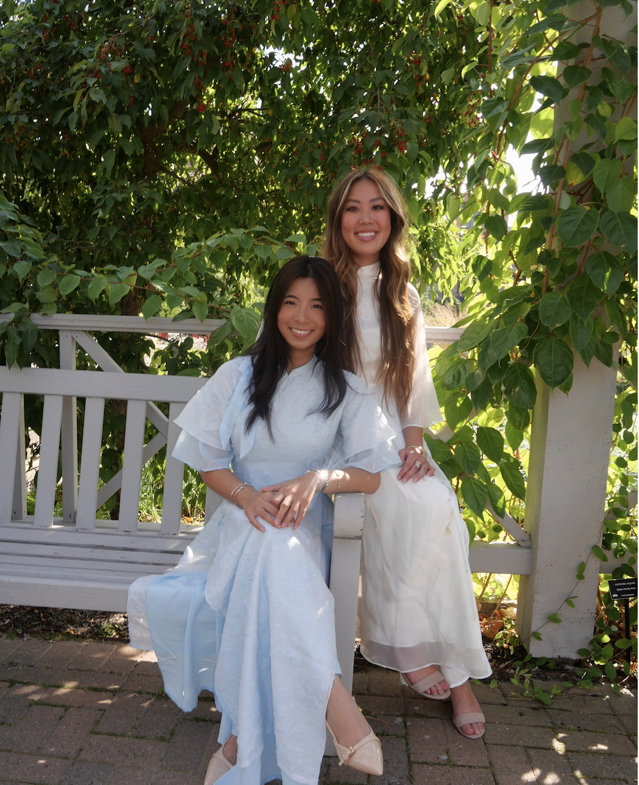

multicultural involvement
at UW, I spend a lot of my time involved in multicultural organizations! this page highlights my involvement in multicultural communities, events, and student spaces that helped shape my leadership, collaboration, and sense of community.
VSA ૮ ˶ᵔ ᵕ ᵔ˶ ა
Starting out as Internal Vice President (IVP) intern and Culture Chair Intern my first two semesters of freshman year, I developed a strong sense of community through VSA.
intern experience
culture chair intern: I helped edit scripts and content for cultural events and worked on planning and marketing for Tết. It gave me a lot of experience with content creation, social media, and what actually goes into making events happen!
ivp intern: I also got to see how internal operations work through the IVP side—helping with general board meetings and learning how everything is organized behind the scenes!!
board experience
for the 2025-2026 school year, I was active as IVP and Culture Chair!
through these experiences, I got to work more indepth with other organizations and the logistical backgrounds of VSA
internal vice president
- strengthened the ACE program
- supported internal affairs
- oversaw intern development
- assisted the president with state affairs -- like collaboration with VSA Marquette
culture chair
- RSO coordinator
- spearheaded Culture Night and Tết
- collaborated with multicultural organizations and Women in Business
VSA Photos
